06.5 벨만 최적 방정식
수많은 정책 중 가장 영리하게 작동하는 최적 정책(π*) 하에서 가치 함수가 만족하는 특별한 공식인 벨만 최적 방정식(Bellman Optimality Equation)을 공부합니다.
기댓값 기호 대신 최선의 행동 하나만을 쏙 골라내는 최댓값(max) 깔때기 비유를 통해 최적 수식의 매혹적인 정의를 쉽게 이해해 봅시다!
👧 도로시: “지니야! 저기 MAX라고 적힌 거대한 마법 깔때기에 점수 카드들이 쏟아져 들어가고 있어!”
🐱 지니: “맞아요, 도로시! 60점, 75점, 92점 중 가장 큰 92점만 쏙 빠져나오죠? 이번 단원에서는 가장 우수한 최선의 행동만 쏙 뽑아내는 ‘벨만 최적 방정식’을 배울 거예요.”
🐶 토토: “멍멍! 기댓값 대신 일등 점수만 골라내는 마법 깔때기라니, 정말 신기해!”
그림 06-5 여러 점수 카드(60, 92, 75)를 “MAX” 마법 깔때기에 통과시켜 가장 우수한 최댓값 점수 카드(92)만을 추출하는 도로시와 지니, 토토
최적정책이란?
벨만 방정식은 어떤 정책 π에 대해 성립하는 방정식입니다.
하지만 우리가 궁극적으로 찾으려는 것은 최적 정책입니다.
최적 정책이란 모든 상태에서 상태 가치 함수가 최대인 정책입니다.
물론 최적 정책도 벨만 방정식을 만족합니다.
게다가 정책이 ‘최적이다’라는 성질을 이용하면 벨만 방정식을 더 간단하게 표현할 수 있습니다.
👧 도로시: “수많은 정책들 중에서 미래 보상을 제일 크게 만들어주는 정책을 최적 정책이라고 부르는 거지?”
🐱 지니: “네! 최적 정책 역시 벨만 방정식을 만족하는데, ‘최적이다’라는 아주 특별한 성질 덕분에 수식이 훨씬 명쾌하고 깔끔해진답니다.”
🐶 토토: “최고의 지름길을 찾는 비법이 담겨 있겠네, 멍!”
06.5.1 상태 가치 함수의 벨만 최적 방정식
최적 정책에 대해 성립하는 방정식, 즉 벨만 최적 방정식bellman optimality equation에 대해 알아보겠습니다.
👧 도로시: “우리가 앞서 배웠던 벨만 기대 방정식에 ‘최적(Optimal)’이라는 날개가 달리는 거네!”
🐱 지니: “그렇습니다. 상태 가치 함수 $v$에 별표($$)가 붙어 $v_(s)$가 되는 순간, 어떤 놀라운 수학적 변화가 일어나는지 하나씩 짚어보죠.”
🐶 토토: “벨만 공식과 최적의 멋진 만남이다, 멍멍!”
그림 06-5a 이미 잘 알고 있는 ‘벨만 방정식’에 가장 우수한 가치를 찾는 ‘최적(Optimal)’ 개념이 더해져 ‘벨만 최적 방정식’이 탄생하는 직관적 결합 원리
먼저 벨만 방정식부터 시작하겠습니다.
앞서 06.2절에서 유도했던 상태 가치 함수의 벨만 기대 방정식([식 06.7])을 다시 떠올려 보겠습니다.
\[\begin{aligned} v_{\pi}(s) &= \sum_{a, s'} \pi(a \mid s) p(s' \mid s, a) \{ r(s, a, s') + \gamma v_{\pi}(s') \} \\ &= \sum_a \pi(a \mid s) \sum_{s'} p(s' \mid s, a) \{ r(s, a, s') + \gamma v_{\pi}(s') \} \end{aligned}\][식 06.7]
수식을 보면 하나의 덩어리로 묶여 있던 시그마 기호 ∑a, s’를 바깥쪽의 ∑a와 안쪽의 ∑s’로 명확하게 분리했습니다.
👧 도로시: “원래 식 06.7에서는 시그마가 $\sum_{a, s’}$ 하나로 묶여 있었는데, 에이전트의 행동 $\sum_a$와 환경의 반응 $\sum_{s’}$로 분리했었지?”
🐱 지니: “아주 정확해요. 에이전트의 생각인 정책 $\pi$와 환경의 물리 법칙인 전이 확률 $p$를 둘로 똑 떨어지게 갈라놓는 것이 최적화의 첫걸음입니다.”
🐶 토토: “내가 결정하는 영역과 세상이 반응하는 영역을 똑똑하게 나눈 거구나, 멍!”
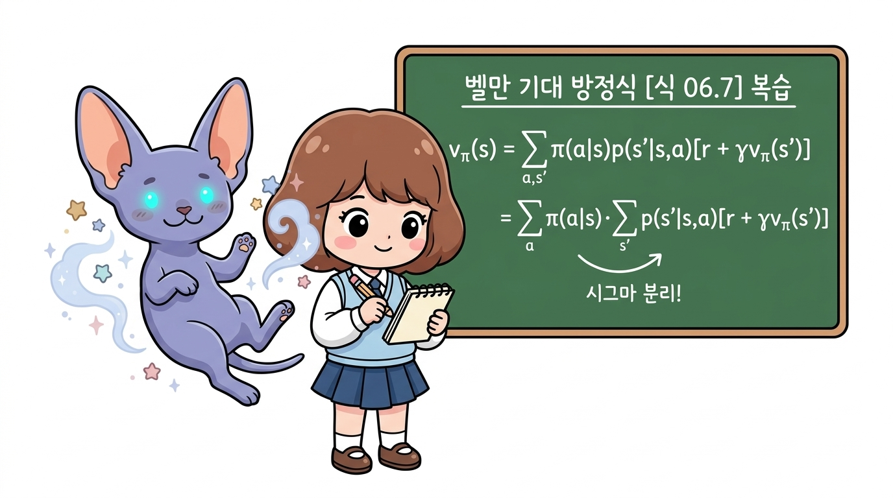
이렇게 분리하는 데는 매우 중요한 직관적 이유가 있습니다.
- 바깥쪽 시그마 (∑a π(a | s)) — 에이전트의 주도 영역:
상태 s에서 어떤 행동 a를 고를지는 전적으로 에이전트의 생각과 판단(정책 π)에 달려 있습니다. - 안쪽 시그마 (∑s’ p(s’ | s, a) { … }) — 환경의 반응 영역:
에이전트가 행동 a를 일단 저지르고 나면, 그다음 어떤 다음 상태 s’로 이동하고 어떤 즉시 보상 r을 받게 될지는 환경의 물리 법칙과 규칙(전이 확률 p)에 의해 결정됩니다. 즉, 이 안쪽 부분이 바로 ‘행동 a를 취했을 때의 가치인 Q 함수 qπ(s, a)’입니다.
👧 도로시: “이렇게 바깥쪽 시그마와 안쪽 시그마로 깔끔하게 쪼개니까 에이전트가 통제할 수 있는 부분이 한눈에 보여!”
🐱 지니: “맞습니다. 바깥쪽의 행동 선택만 ‘최고의 행동 하나에 100% 몰빵’하도록 바꾸면 곧바로 최적화가 완성되거든요.”
🐶 토토: “안쪽의 환경 전이는 바꿀 수 없지만, 내 행동은 최고로 고를 수 있지, 멍멍!”
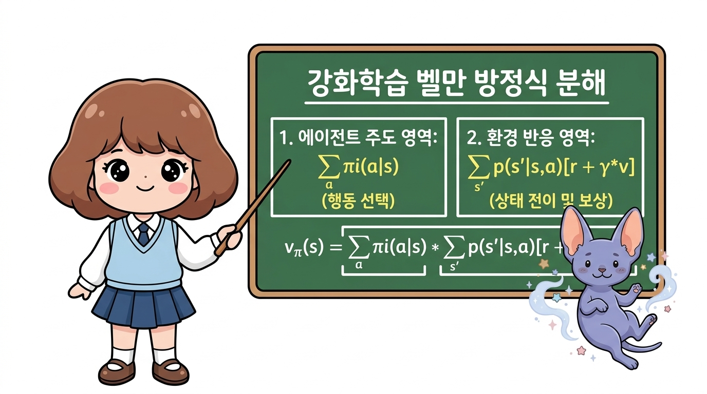
그림 06-6 [식 06.7]의 2단계 분리 구조: 바깥쪽 시그마(에이전트의 행동 선택 π)와 안쪽 시그마(환경의 전이 확률 p 및 보상)의 역할 구분
이처럼 에이전트가 통제하는 ‘행동 선택’과 환경이 통제하는 ‘상태 전이’를 둘로 깔끔하게 갈라놓아야, 뒤에서 에이전트의 정책을 가장 똑똑한 최고의 행동 하나만 100% 쏙 골라내는 최댓값(maxa) 형태로 손쉽게 최적화할 수 있습니다.
벨만 방정식은 어떠한 정책에서도 성립합니다.
벨만 방정식의 가장 강력한 특징 중 하나는 ‘보편성’입니다.
에이전트가 엉뚱하고 미숙한 정책을 따르든, 동전을 던져 무작위로 움직이는 정책을 따르든, 아니면 세상에서 가장 영리하게 행동하는 정책을 따르든 상관없이, 벨만 방정식은 세상에 존재하는 그 어떤 정책 π에 대해서도 예외 없이 100% 성립합니다.
| 따라서 세상의 무수한 정책 중 가장 이상적이고 뛰어난 최적 정책 π*(a | s) 역시 벨만 방정식을 당연히 완벽하게 만족합니다! |
👧 도로시: “벨만 방정식은 엉뚱한 초보 정책이든, 무작위 정책이든 세상의 모든 정책에서 성립한다고?”
🐱 지니: “네! 벨만 방정식의 가장 위대한 힘이 바로 이 ‘보편성’이에요. 예외 없이 성립하기 때문에 가장 완벽한 최적 정책 $\pi_*$를 대입해도 당연히 100% 성립하죠.”
🐶 토토: “어떤 주사위 정책을 가져와도 다 통하는 만능 열쇠였구나, 멍!”
그림 06-6a 엉뚱한 초보 정책, 주사위를 굴리는 무작위 정책, 최고의 최적 정책(π*) 등 그 어떤 정책 카드를 제시해도 100% 완벽하게 성립하는 벨만 방정식의 놀라운 보편성
그러므로 일반 벨만 방정식([식 06.7])의 정책 자리 π에 최적 정책 π*를 그대로 대입하면 다음과 같은 식이 성립합니다.
\[v_*(s) = \sum_a \pi_*(a \mid s) \sum_{s'} p(s' \mid s, a) \{ r(s, a, s') + \gamma v_*(s') \}\][식 06.15]
👧 도로시: “그럼 식 06.7의 정책 자리에 그냥 최적 정책 $\pi_*$를 쏙 집어넣으면 [식 06.15]가 되는 거네!”
🐱 지니: “그렇죠! 좌변도 최적 가치 $v_(s)$, 우변의 미래 가치도 최적 가치 $v_(s’)$로 자연스럽게 옷을 갈아입습니다.”
🐶 토토: “별표 옷을 입은 수식들이 반짝반짝 빛나고 있어, 멍!”
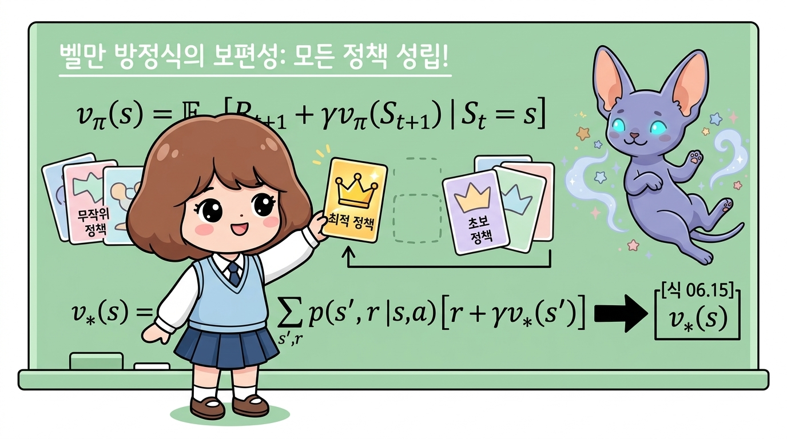
그림 06-7 세상의 모든 정책에 통하는 벨만 방정식의 보편성과 최적 정책(π*) 대입 원리
최적 정책 π*로 지정
이 식에서 정책을 최적 정책 π*로 지정했으므로, 좌변의 현재 상태 가치와 우변의 다음 상태 가치 역시 저절로 최적 상태 가치 함수인 v*(s)와 v*(s’)로 바뀝니다.
[식 06.15]는 최적 정책 하에서의 가치를 다루고 있지만, 아직 겉모습은 일반 벨만 방정식처럼 여러 행동들을 확률적으로 더하는 시그마(∑a π*) 형태를 유지하고 있습니다.
이 식은 곧바로 살펴볼 진정한 벨만 최적 방정식([식 06.16])으로 건너가기 위한 결정적인 징검다리 역할을 합니다.
👧 도로시: “[식 06.15]는 최적 정책을 넣긴 했지만 아직 겉모습은 행동들을 확률로 더하는 시그마 형태잖아?”
🐱 지니: “맞아요. 하지만 이 식이 바로 다음에 등장할 진정한 벨만 최적 방정식, 즉 $\max_a$로 건너가기 위한 가장 튼튼한 징검다리랍니다.”
🐶 토토: “징검다리를 딛고 폴짝 뛰면 $\max$의 세계로 가는 거야, 멍멍!”
그림 06-8 벨만 기대 방정식([식 06.7])에서 최적 정책 대입([식 06.15])을 거쳐 벨만 최적 방정식([식 06.16], max_a)으로 건너가는 징검다리 가교 원리
수학이나 강화 학습에서 별표(*)는 ‘최적(Optimal)’을 뜻하는 약속입니다.
세상에는 무수히 많은 정책(행동 습관) π1, π2, π3 등이 존재하고, 각 정책을 따랐을 때 얻는 가치도 제각각 다를 것입니다.
이 무수한 별들 중에서 모든 상태에서 가장 큰 가치(최댓값)를 얻어내는 가장 밝고 이상적인 타겟을 가리키기 위해 관례적으로 별표(*)를 붙여서 π*(최적 정책)와 v*(최적 상태 가치 함수)로 표기합니다. 이는 밤하늘의 무수한 별들 중 길을 찾아주는 가장 밝은 북극성과 같습니다.
👧 도로시: “수학이나 강화학습에서 별표($*$)는 항상 ‘최적(Optimal)’을 뜻하는 특별한 기호였구나!”
🐱 지니: “네, 밤하늘의 무수한 별들 중 길을 비춰주는 가장 밝은 북극성처럼, 가장 큰 가치를 주는 궁극의 목표를 상징합니다.”
🐶 토토: “반짝이는 북극성 스타($*$)를 따라가면 최고의 보상을 얻겠네, 멍!”
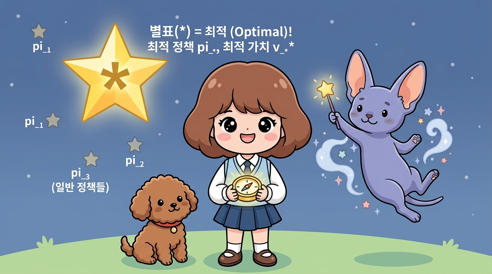
그림 06-9 무수한 일반 정책들(π1, π2, π3) 중에서 가장 밝게 빛나는 북극성처럼 최적의 가치를 안내하는 별표(*) 기호의 수학적 의미
최적의 행동: 가장 높은 점수를 주는 행동을 골라내기
이제 우리가 마주한 핵심 질문은 아주 명확합니다.
**“과연 최적 정책 π*(a s)는 현재 상태 s에서 어떤 행동 a를 선택해야 할까요?”**
👧 도로시: “그럼 최적 정책 $\pi_*$는 상태 $s$에서 도대체 어떤 행동을 골라야 해?”
🐱 지니: “고민할 필요가 없어요, 도로시! 뒤따라올 점수가 가장 높은 1등 행동을 단 하나만 쏙 골라내면 그게 바로 최적 행동입니다.”
🐶 토토: “가장 맛있는 뼈다귀가 있는 쪽으로 직진하는 것과 같지, 멍멍!”
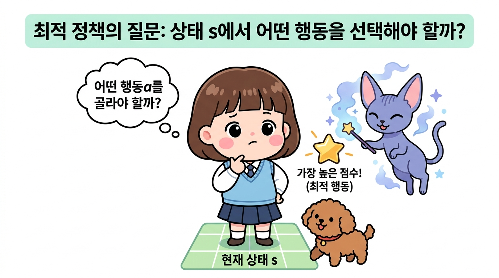
그림 06-9a 현재 상태 s에서 어떤 행동 a를 골라야 할지 고민하는 도로시에게, “가장 높은 점수를 주는 행동이 바로 최적 행동”임을 알려주는 지니와 토토
앞서 [식 06.15]의 우변에 등장한 수식 덩어리를 다시 살펴보겠습니다: \(\sum_{s'} p(s' \mid s, a) \{ r(s, a, s') + \gamma v_*(s') \}\)
이 수식은 기호가 길어서 복잡해 보이지만, 그 본질은 매우 단순합니다.
바로 “현재 상태 s에서 특정 행동 a를 딱 실행했을 때, 뒤따라올 ‘즉시 보상’과 ‘다음 상태에서의 미래 최적 가치 할인합’을 환경 전이 확률에 따라 가중평균한 기대 성적표(즉, 최적 행동 가치 q*(s, a))”를 뜻합니다.
👧 도로시: “우변의 시그마 $\sum_{s’} p { r + \gamma v_* }$ 부분이 바로 행동 $a$를 취했을 때의 기대 성적표구나!”
🐱 지니: “그렇습니다. 지금 당장 받는 즉시 보상 $r$과, 도착할 다음 상태의 최적 가치 $\gamma v_(s’)$를 환경 확률로 평균 낸 최적 Q값 $q_(s, a)$죠.”
🐶 토토: “행동 하나를 골랐을 때 얻는 성적표가 딱 계산되는 거네, 멍!”
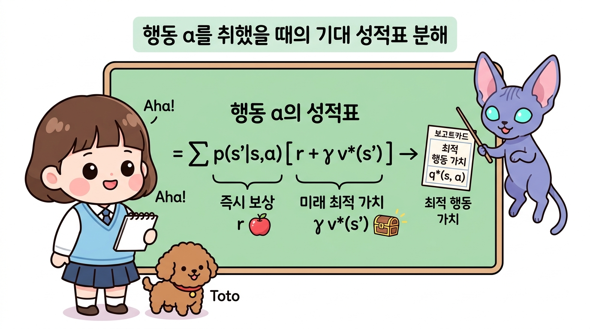
그림 06-9b 행동 a를 취했을 때 뒤따라올 [즉시 보상 r]과 [미래 최적 가치 γv*(s’)]의 기대 가치 합을 직관적으로 분해하여 설명하는 지니와 도로시
이제 상태 s에 서 있는 에이전트(도로시) 앞에 세 가지 갈림길(행동 후보 {a1, a2, a3})이 놓여 있고, 각 행동을 실행했을 때의 기대 성적표가 다음과 같다고 가정해 보겠습니다.
- 행동 a1 선택 시 기대 가치:
-2.0점(가시덤불에 걸려 감점을 받는 손해의 길) - 행동 a2 선택 시 기대 가치:
0.0점(이득도 손해도 없는 평범한 본전의 길) - 행동 a3 선택 시 기대 가치:
+4.0점(가장 달콤하고 풍성한 보물을 얻는 대박의 길!)
👧 도로시: “행동 $a_1$은 -2점, $a_2$는 0점, $a_3$은 무려 +4점이야! 나라면 당연히 +4점인 $a_3$을 고를래!”
🐱 지니: “누구라도 그렇게 하겠죠! 최적 정책은 손해나 본전인 길에는 눈길도 주지 않고 오직 1등인 $a_3$에만 집중합니다.”
🐶 토토: “대박 보물이 있는 길로만 가야지, -2점 길로 갈 순 없잖아, 멍멍!”
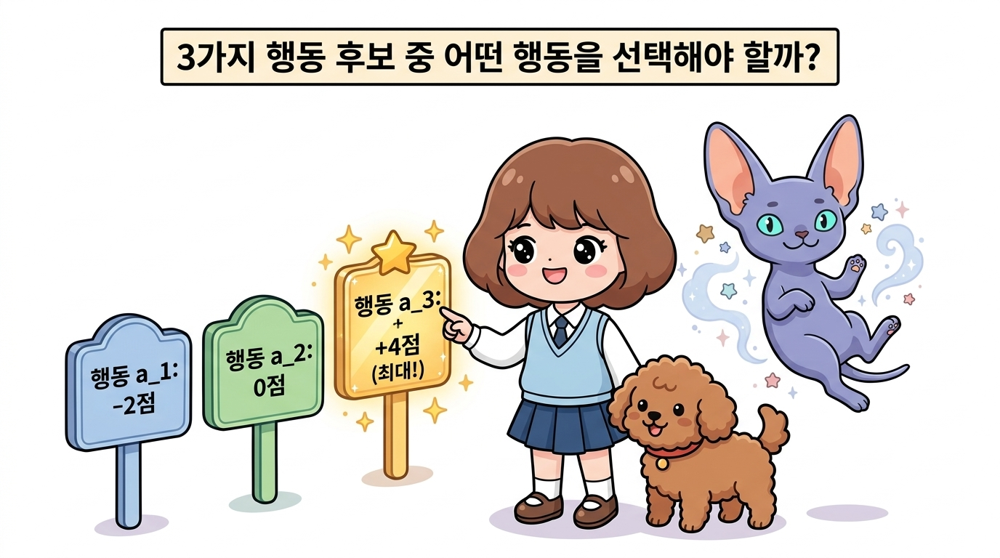
그림 06-10 상태 s에서 마주한 세 가지 행동 후보 {a1, a2, a3}의 기대 점수 비교와 에이전트의 선택 고민
백업 다이어그램
아래 [그림 06-12]의 백업 다이어그램을 통해서도 이 세 갈래 행동의 기대 점수 구조를 명확하게 확인할 수 있습니다.
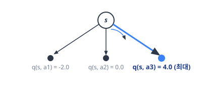
그림 06-12 세 가지 행동 후보 노드와 각각의 기대 가치(-2.0, 0.0, 4.0) 분기 구조
1단계: 최선의 행동에 100% 몰빵! 확률 정책에서 결정적 정책으로의 변신
앞서 살펴본 것처럼 세 가지 행동 {a1, a2, a3}의 기대 점수가 각각 -2.0점, 0.0점, +4.0점으로 매겨져 있다면, 최적 정책 π*는 어떤 확률 분포로 행동을 선택해야 할까요?
- 상식적으로 에이전트의 목표는 미래 수익을 최대화하는 것입니다.
- 그렇다면 손해를 보는 a1(-2점)이나 본전인 a2(0점)에 조금이라도 확률을 낭비할 이유가 전혀 없습니다!
- 따라서 가장 큰 보상을 안겨주는 최고의 행동 a3(+4.0점)에 100%(확률 1.0)를 전부 집중하고, 나머지 행동에는 0%를 배정하는 것이 가장 합리적입니다.
| 이처럼 확률적 정책 π*(a | s)는 특정 상태 s에서 단 하나의 행동만을 100% 실행하는 결정적 정책(Deterministic Policy, μ*(s) = a3)으로 자연스럽게 귀결됩니다. |
그 결과 상태 s의 최적 가치 v*(s)는 복잡한 확률 계산 없이, 선택된 행동 a3의 점수인 4.0이 그대로 됩니다.
\[v_*(s) = (0 \times -2) + (0 \times 0) + (1.0 \times 4) = 4.0\]👧 도로시: “그럼 $a_3$에 확률을 100% 전부 몰아주고, 나머지는 0%로 만들면 확률을 계산할 필요도 없이 가치가 그냥 4.0이 되네!”
🐱 지니: “정답입니다! 확률적 정책이 특정 상태에서 딱 하나의 행동만 확실하게 고르는 ‘결정적 정책 $\mu_*(s)$’으로 자연스럽게 변신한 것이죠.”
🐶 토토: “주사위 굴리지 않고 제일 좋은 길로 100% 직진, 멍!”
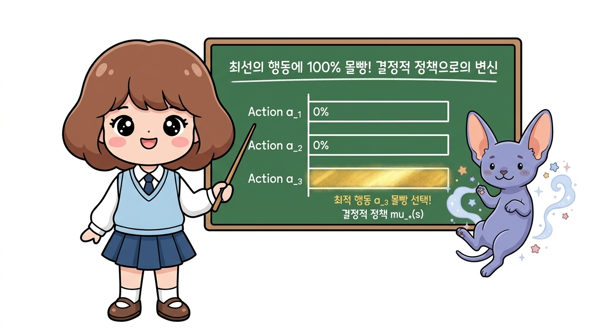
그림 06-11 세 가지 행동 후보 중 최선인 a3에만 확률 100%를 집중하여 결정적 정책 μ*(s)이 되고 상태 가치가 4.0으로 확정되는 원리
2단계: 시그마(∑) 가중평균에서 최댓값(max)으로! [식 06.16] 벨만 최적 방정식의 완성
이제 특정 숫자(-2, 0, 4)를 넘어 일반적인 모든 상태와 행동에 대해 공식화해 보겠습니다.
앞서 확인했듯이, 최적 정책은 여러 행동들의 가치를 확률대로 섞어 더하는 가중평균(∑a π*)을 계산할 필요가 없습니다.
그저 가능한 모든 행동 후보들 중 기대 가치가 가장 큰 것 하나만 최댓값(max)으로 쏙 골라내면 그만입니다!
👧 도로시: “행동들의 가치를 확률대로 섞던 시그마 가중평균이, 가장 큰 1등 값만 쏙 골라내는 $\max_a$로 바뀌는 거구나!”
🐱 지니: “맞아요. 이제 복잡한 시그마 대신 수학 연산자 $\max_a$ 하나만 앞에 붙여주면 끝납니다.”
🐶 토토: “시그마야 안녕! 이제부터는 일등만 뽑는 맥스($\max$)의 시대다, 멍멍!”
그림 06-11a 여러 행동의 가치를 확률로 곱해 섞던 시그마(∑) 가중평균에서, 가장 높은 1등 가치만을 쏙 뽑아내는 maxa 연산자로 변신하는 원리
| 따라서 [식 06.15]의 바깥쪽 시그마 가중합 ∑a π*(a | s) 부분이 단 하나의 수학 연산자인 maxa(최댓값 연산자)로 깔끔하게 치환됩니다. |
[식 06.16]
이 [식 06.16]이 바로 강화학습 이론의 최고 핵심 공식 중 하나인 상태 가치 함수의 벨만 최적 방정식(Bellman Optimality Equation for State-Value Function)입니다!
👧 도로시: “와! [식 06.16]을 보니 정책 기호 $\pi$가 완전히 자취를 감추었어!”
🐱 지니: “놀랍죠? 어떤 정책인지 몰라도 환경의 전이 규칙과 미래 최적 가치만으로 현재 상태의 최적 가치 $v_*(s)$가 완벽하게 결정되는 벨만 최적 방정식입니다.”
🐶 토토: “정책 기호가 쏙 빠지고 수식이 정말 늠름해졌어, 멍!”
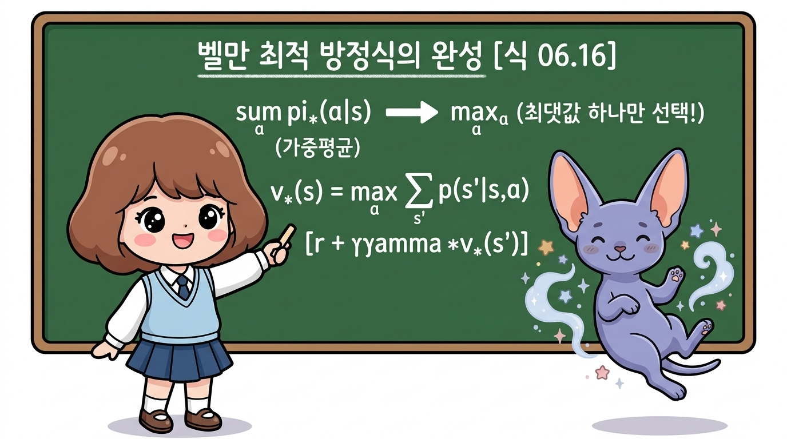
그림 06-12a 바깥쪽의 시그마 확률 가중합이 가장 큰 가치를 하나만 쏙 골라내는 maxa 연산자로 대체되어 벨만 최적 방정식이 완성되는 원리
벨만 최적 방정식([식 06.16])의 놀라운 특징:
수식을 가만히 살펴보면 정책 기호(π)가 완전히 자취를 감추었습니다!
일반 벨만 방정식에서는 에이전트의 현재 정책 π가 어떻게 정의되어 있는지 알아야 가치를 구할 수 있었지만, 벨만 최적 방정식은 환경의 전이 규칙(p, r)과 미래의 최적 가치(v*)만으로 현재 상태의 최적 가치(v*(s))가 완벽하게 결정됩니다.
3단계: ‘max’ 연산자의 직관적 의미와 작동 원리 (마법 깔때기 비유)
수식에 새롭게 등장한 max (최댓값 연산자)는 컴퓨터 프로그래밍과 수학에서 가장 널리 쓰이는 연산자 중 하나로, “주어진 여러 후보들 중 가장 큰 값을 하나만 쏙 뽑아낸다”는 직관적인 의미를 갖습니다.
마치 여러 크기의 구슬이나 카드들을 ‘MAX’ 마법 깔때기(Funnel)에 한꺼번에 쏟아부었을 때, 오직 1등 점수 카드 하나만을 아래로 통과시켜 주는 원리와 같습니다.
👧 도로시: “-2점, 0점, 4점 카드를 MAX 깔때기에 넣으니까 정말 4점 카드 하나만 쏙 빠져나오네!”
🐱 지니: “이게 바로 $\max$ 연산자의 마법이에요. 여러 행동 갈림길 중 가장 큰 보상을 안겨주는 최고치만을 남기는 직관적인 필터죠.”
🐶 토토: “마법 깔때기야, 언제나 일등 카드만 부탁해, 멍멍!”
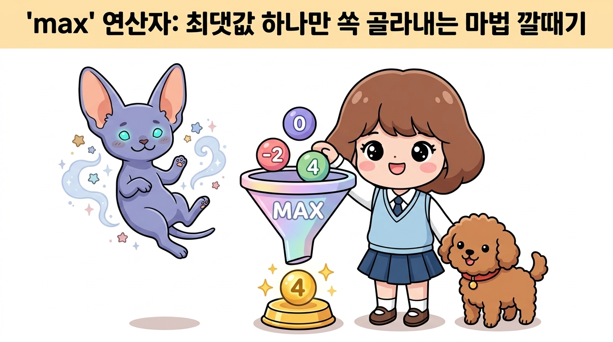
그림 06-13 여러 점수의 후보 카드(-2, 0, 4)를 ‘MAX’ 깔때기에 통과시켜 오직 최댓값 4만을 추출하는 직관적 비유
NOTE_
max는 집합이나 함수에서 값이 가장 큰 원소를 선택하는 연산자입니다.
예를 들어 원소가 4개인 집합 x = {1, 2, 3, 4}가 있고, 각 원소의 제곱을 계산하는 함수 g(x) = x2이 있다고 해보겠습니다.\[\max_x g(x) = 16\]
- g(1) = 1, g(2) = 4, g(3) = 9, g(4) = 16
이 중 가장 큰 값(최댓값)을 구하는 수식은max기호를 사용하여 다음과 같이 표기합니다.이와 마찬가지로 벨만 최적 방정식의 maxa 역시 상태 s에서 선택할 수 있는 모든 행동 a에 대해 뒤따라올 점수를 각각 계산한 뒤, 그중 가장 큰 점수를 쏙 뽑아내어 현재 상태의 최적 가치 v*(s)로 삼는 연산입니다.
06.5.2 행동 가치 함수의 벨만 최적 방정식
상태 가치 함수(V 함수)와 마찬가지로, 행동 가치 함수(Q 함수)에 대해서도 동일한 논리로 벨만 최적 방정식을 유도할 수 있습니다.
👧 도로시: “상태 가치 함수 $v_$를 정복했으니, 이제 행동 가치 함수인 Q 함수 $q_$의 벨만 최적 방정식도 알아볼 차례네!”
🐱 지니: “네, Q 함수도 똑같이 2단계를 거치면 멋진 최적 수식이 완성된답니다.”
🐶 토토: “Q 함수의 최적 방정식도 단숨에 정복해 보자, 멍!”
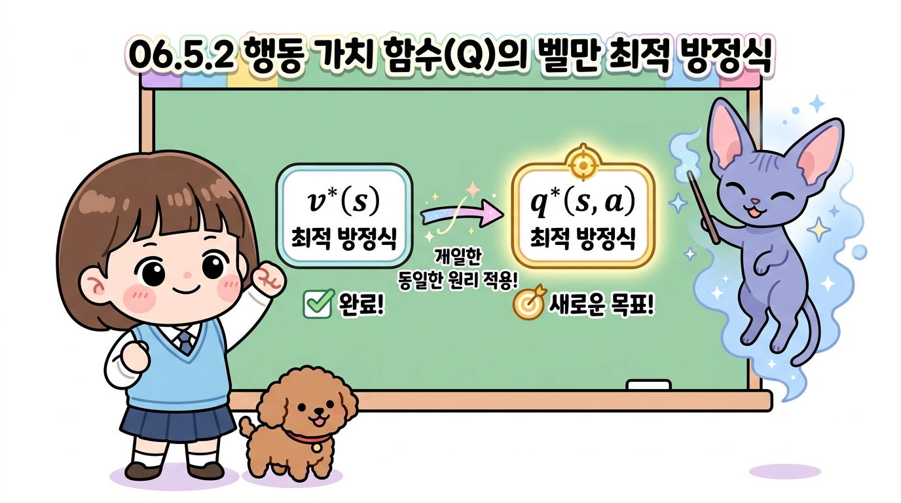
그림 06-13a 이미 정복한 상태 가치 함수(v*)의 벨만 최적 방정식 원리를 바탕으로, 새로운 목표인 행동 가치 함수(q*)의 벨만 최적 방정식 유도에 나서는 도로시와 지니
최적 행동 가치 함수
어떤 상태 s에서 특정 행동 a를 취한 뒤, 그 이후의 모든 선택을 최적 정책(π*)에 따라 진행했을 때 얻게 되는 최고의 기대 수익을 최적 행동 가치 함수(Optimal Action-Value Function)라고 부르며, q*(s, a)로 표기합니다.
\[q_*(s, a) = \max_{\pi} q_{\pi}(s, a)\]이제 V 함수 때와 동일하게 2단계의 논리적 전개를 거쳐 Q 함수의 벨만 최적 방정식을 완성해 보겠습니다.
👧 도로시: “$q_(s, a)$는 상태 $s$에서 일단 행동 $a$를 취한 다음, 그 이후부터 최적 정책 $\pi_$를 따랐을 때의 최고 점수지?”
🐱 지니: “정확해요! 첫 행동 이후 황금빛 최적의 길을 걸을 때 얻을 수 있는 최고의 성적표랍니다.”
🐶 토토: “첫 발을 내딛고 나서 끝까지 완벽하게 달렸을 때의 점수구나, 멍멍!”
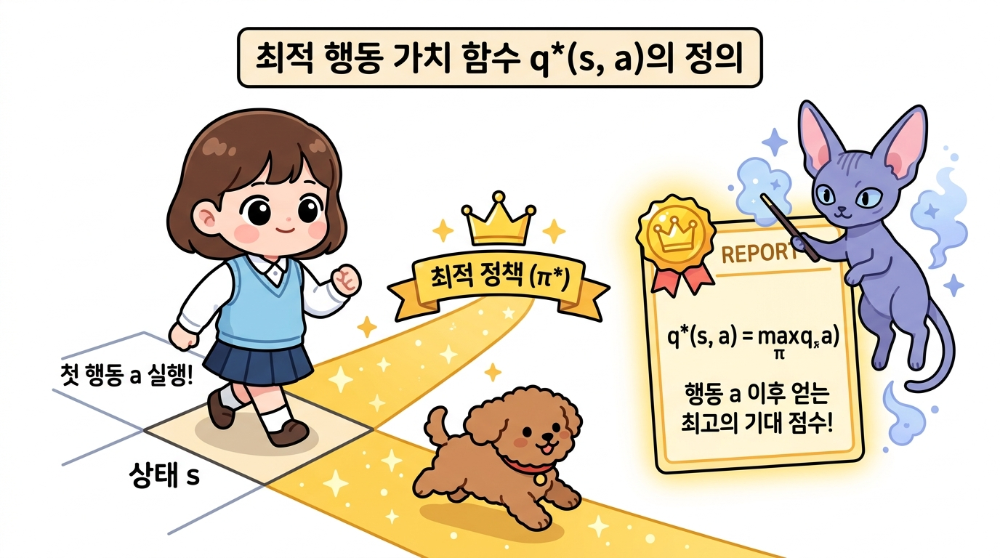
그림 06-13b 상태 s에서 첫 행동 a를 실행한 후, 황금빛 최적 정책(π*)의 길을 따라 얻을 수 있는 최고의 기대 성적표: 최적 행동 가치 함수 q*(s, a)의 정의
1단계: Q 함수 벨만 기대 방정식에 최적 정책(π*) 대입
먼저 앞서 배운 일반 정책 π에 대한 Q 함수의 벨만 기대 방정식([식 06.14])을 떠올려 봅니다.
\[q_{\pi}(s, a) = \sum_{s'} p(s' \mid s, a) \left\{ r(s, a, s') + \gamma \sum_{a'} \pi(a' \mid s') q_{\pi}(s', a') \right\}\]이 벨만 기대 방정식은 세상에 존재하는 모든 정책 π에 대해 항상 성립하는 일반 공식입니다.
따라서 최고의 정책인 최적 정책 π*를 대입해도 당연히 그대로 성립합니다.
👧 도로시: “일반 정책 $\pi$에 대한 Q 함수 벨만 기대 방정식 [식 06.14]에 최적 정책 $\pi_*$를 대입할 준비를 하고 있어!”
🐱 지니: “V 함수 때와 똑같아요. 모든 정책에 통하는 보편성이 있으니, $\pi_*$를 넣어도 완벽하게 성립합니다.”
🐶 토토: “최적 정책 카드를 수식에 쏙 끼워 넣는 순간이네, 멍!”
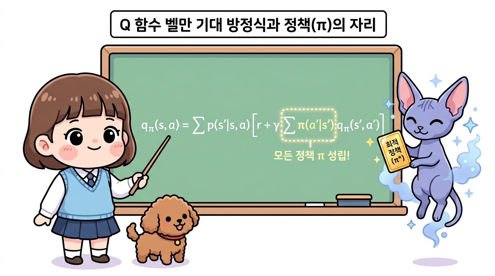
그림 06-13c 일반 정책 π에 대해 성립하는 Q 함수 벨만 기대 방정식([식 06.14])과 최적 정책(π*) 카드를 대입할 준비를 하는 도로시와 지니
모든 π 자리에 최적 정책 기호 π*와 최적 Q 함수 기호 q*를 대입하면 다음과 같은 식을 얻습니다. \(q_*(s, a) = \sum_{s'} p(s' \mid s, a) \left\{ r(s, a, s') + \gamma \sum_{a'} \pi_*(a' \mid s') q_*(s', a') \right\}\)
[식 06.17]
👧 도로시: “그런데 지니야, 왜 식의 바깥쪽에는 $\max$가 안 붙고 안쪽의 다음 행동 선택에만 붙어?”
🐱 지니: “좋은 질문이에요! $q(s, a)$는 이미 첫 행동 $a$가 주어진 상태라 고를 수 없거든요. 에이전트가 최선의 선택을 내리는 건 다음 상태 $s’$에 도착해서 다음 행동 $a’$를 고를 때부터입니다.”
🐶 토토: “아하! 첫 행동은 이미 정해졌으니, 다음 행동에서 맥스를 쓰는 거구나, 멍멍!”
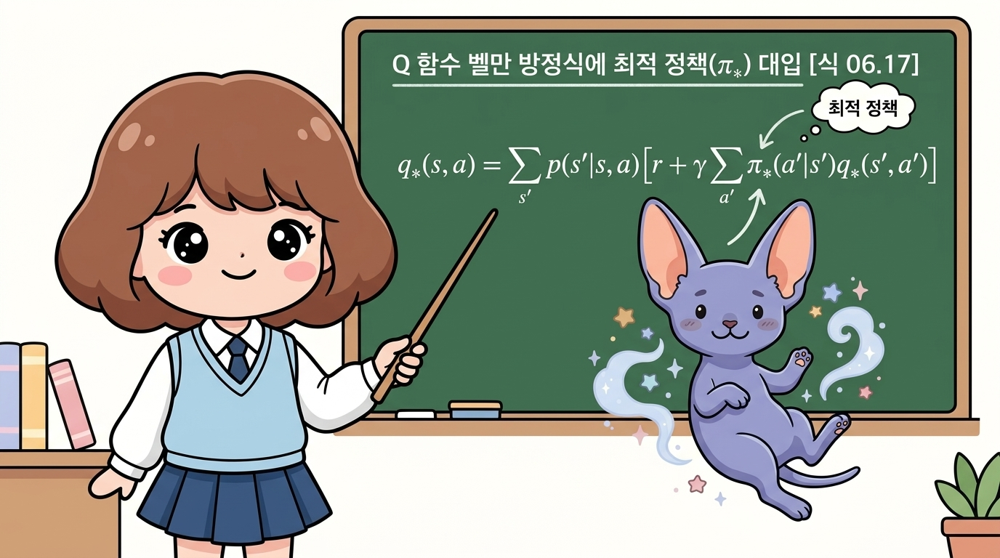
그림 06-14 일반 Q 함수 벨만 기대 방정식의 정책 자리에 최적 정책 π* 카드를 대입하여 [식 06.17]을 유도하는 과정
여기서 잠깐! 왜 식의 시작 부분(바깥쪽)에는 max가 붙지 않을까요?
상태 가치 함수 v(s)는 시작점부터 “어떤 행동을 고를까?”를 에이전트가 직접 결정해야 하므로 바깥쪽에 maxa가 붙었습니다.
하지만 행동 가치 함수 q(s, a)는 “상태 s에서 이미 행동 a를 취했다!”는 사실이 함수 입력값으로 못 박혀 있습니다. 따라서 첫 번째 행동 a는 선택의 여지가 없으며, 에이전트가 최적의 선택(max)을 내리는 시점은 다음 상태 s’에 도달한 후 그다음 행동 a’를 고를 때부터 시작됩니다.
2단계: 안쪽 시그마 가중합이 maxa’로 변신! [식 06.18]
다음 전개는 앞서 06.5.1절에서 상태 가치 함수를 유도했던 논리와 완벽하게 같습니다.
다음 상태 s’에 도달한 최적 에이전트는 여러 가능한 다음 행동 a’들의 가치를 확률적으로 섞는 가중평균(∑a’ π*)을 계산하지 않습니다. 대신 가장 큰 Q 가치를 가져다줄 행동 하나만을 100% 확률로 쏙 선택(max)합니다.
👧 도로시: “다음 상태 $s’$에 도착한 에이전트는 다음 행동 $a’$들 중 가장 큰 Q값을 주는 행동을 100% 고르겠네!”
🐱 지니: “맞습니다. 여러 다음 행동을 확률로 섞지 않고, 최고치를 주는 행동 하나만 $\max_{a’}$로 쏙 뽑아냅니다.”
🐶 토토: “다음 목적지에서도 당연히 일등 행동만 골라야지, 멍!”
그림 06-14a 다음 상태 s’에 도달한 최적 에이전트가 확률 가중합 대신 가장 높은 Q 가치를 가져다주는 다음 행동 a’ 하나만을 100% 최선의 선택(maxa’)으로 골라내는 원리
| 따라서 [식 06.17] 안쪽 괄호의 ∑a’ π*(a’ | s’) q*(s’, a’) 부분이 단 하나의 최댓값 연산자 maxa’ q*(s’, a’)로 깔끔하게 치환됩니다! |
[식 06.18]
👧 도로시: “드디어 [식 06.18]이 완성됐어! 안쪽 괄호가 $\gamma \max_{a’} q_*(s’, a’)$로 깔끔하게 정리됐네!”
🐱 지니: “이 [식 06.18]이 바로 강화학습에서 가장 널리 쓰이는 Q 함수의 벨만 최적 방정식입니다.”
🐶 토토: “수식이 군더더기 없이 딱 떨어져서 정말 멋지다, 멍멍!”
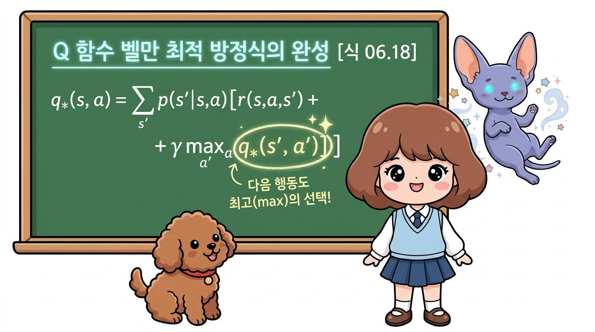
그림 06-15 안쪽의 복잡한 정책 확률 가중합이 미래 행동의 최고치를 쏙 뽑아내는 maxa’ 연산자로 압축되어 완성된 Q 함수 벨만 최적 방정식 [식 06.18]
[식 06.18]이 바로 강화학습에서 널리 쓰이는 Q 함수(행동 가치 함수)의 벨만 최적 방정식(Bellman Optimality Equation for Q-function)입니다!
이 방정식은 나중에 배울 대표적인 강화학습 알고리즘인 Q-러닝(Q-Learning)과 DQN(Deep Q-Network)의 굳건한 수학적 토대가 됩니다.
👧 도로시: “이 Q 함수 벨만 최적 방정식이 유명한 Q-러닝(Q-Learning)과 딥마인드의 DQN을 지탱하는 기둥이라고?”
🐱 지니: “맞아요, 도로시! 인공신경망으로 아타리 게임을 사람보다 잘하게 만든 DQN의 핵심 원리가 바로 이 수식에서 출발했답니다.”
🐶 토토: “세상을 놀라게 한 인공지능의 뿌리가 바로 이 공식이었구나, 멍!”
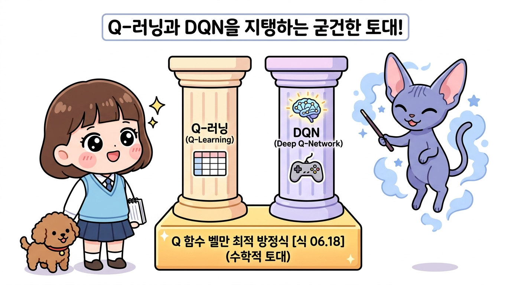
그림 06-15a Q-러닝(Q-Learning)과 DQN(Deep Q-Network) 등 현대 강화학습의 최고 핵심 알고리즘들을 든든하게 떠받치는 Q 함수 벨만 최적 방정식의 수학적 토대
NOTE_ MDP에서 결정적 최적 정책과 가치 함수의 유일성
모든 마르코프 결정 과정(MDP)에서는 항상 최소 하나 이상의 결정적 최적 정책(Deterministic Optimal Policy)이 존재합니다. 결정적 정책이란 어떤 상태 s에서 주사위를 굴리지 않고 특정 행동 a를 100% 확실하게 선택하는 정책으로, μ*(s)와 같이 단일 함수 형태로 나타낼 수 있습니다.
만약 보상이 똑같은 여러 갈래의 길이 존재한다면 최적 정책 자체는 여러 개가 될 수 있지만, 그 어떤 최적 정책을 따르더라도 달성할 수 있는 최적 가치의 크기(v*와 q*)는 완벽하게 동일하고 유일합니다. 따라서 최적 가치 함수는 복수 개가 아니라 v*와 q*라는 단 하나의 기호로 고유하게 정의됩니다.
06.5.3 벨만 최적 백업 다이어그램 분석과 대칭성
상태 가치 함수(v*)와 행동 가치 함수(q*)의 벨만 최적 방정식은 서로 완벽한 짝을 이루는 거울 같은 대칭 구조를 가지고 있습니다.
두 방정식의 백업 다이어그램을 나란히 놓고 비교해 보면 그 직관을 한눈에 파악할 수 있습니다.
👧 도로시: “$v_$와 $q_$의 백업 다이어그램을 나란히 놓으니까 정말 거울처럼 닮았어!”
🐱 지니: “그렇죠? 에이전트의 선택인 $\max$와 환경의 반응인 확률 $p$가 일어나는 순서만 서로 반대로 뒤바뀌어 있을 뿐, 본질은 똑같답니다.”
🐶 토토: “에이전트 먼저냐 환경 먼저냐의 차이뿐인 완벽한 쌍둥이다, 멍멍!”
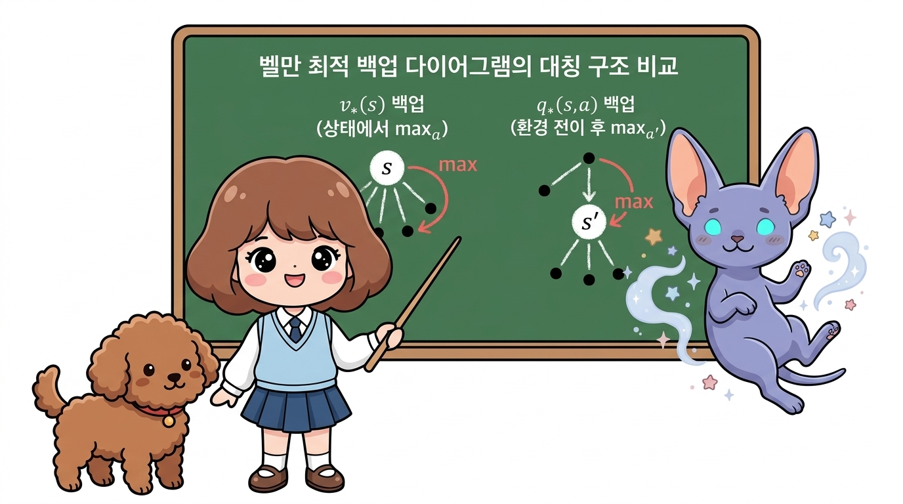
그림 06-16 상태 가치 함수(v*)와 행동 가치 함수(q*)의 최적 백업 다이어그램 비교: 최적 의사결정(max)이 일어나는 위치와 환경의 상태 전이 확률(∑s’ p)의 대칭 구조
두 최적 가치 함수의 백업 다이어그램 대칭 구조
- 상태 가치 함수 v*(s)의 흐름:
- 출발점: 상태 s (흰색 원)
- 1단계 (에이전트의 선택): 에이전트가 최선의 행동 a를 선택함 → maxa 아크 발생
-
2단계 (환경의 반응): 선택된 행동에 대해 환경이 다음 상태 s’를 확률적으로 결정 → ∑s’ p(s’ s, a)
👧 도로시: “$v_*$의 흐름은 흰색 원인 상태 $s$에서 출발해서, 에이전트가 $\max_a$ 아크로 최선의 행동을 고르고, 환경이 확률 $p$로 다음 상태를 정해줘.”
🐱 지니: “정확한 요약이에요! 에이전트의 결단이 먼저 오고 환경의 반응이 뒤따르는 흐름입니다.”
🐶 토토: “상태 출발, 맥스 선택, 환경 전이! 순서가 머리에 쏙쏙 들어와, 멍!”
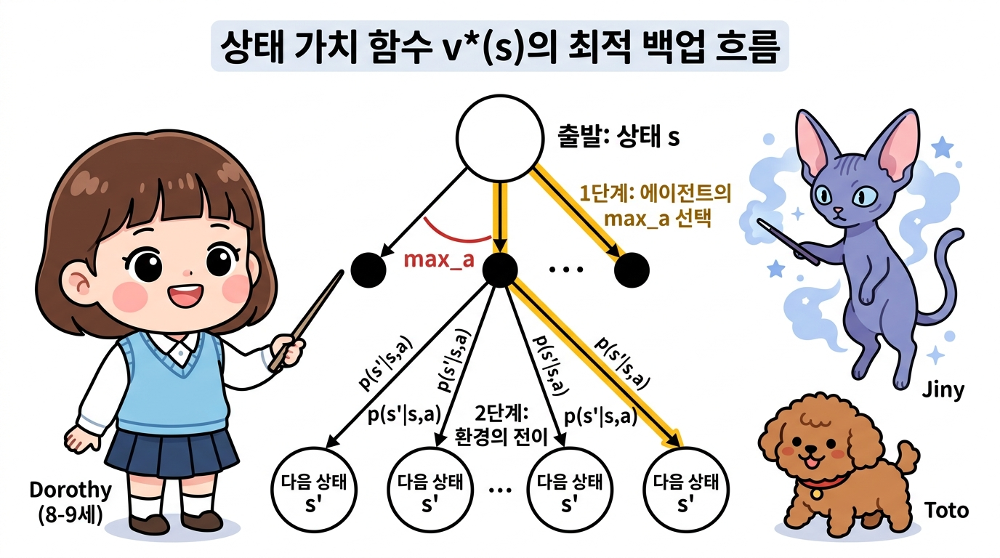
그림 06-16a 상태 가치 함수 v*(s)의 최적 백업 다이어그램 흐름: 상태 s 출발 → 에이전트의 maxa 최적 행동 선택 → 환경의 확률적 전이
- 행동 가치 함수 q*(s, a)의 흐름:
- 출발점: 상태-행동 쌍 (s, a) (검은색 원)
-
1단계 (환경의 반응): 이미 주어진 행동 a에 대해 환경이 다음 상태 s’로 전이 → ∑s’ p(s’ s, a) - 2단계 (에이전트의 선택): 도착한 다음 상태 s’에서 최고의 다음 행동 a’를 선택함 → maxa’ 아크 발생
👧 도로시: “$q_*$는 검은색 원인 $(s, a)$에서 출발해서 환경이 먼저 다음 상태 $s’$를 정해주고, 거기서 에이전트가 $\max_{a’}$ 아크를 그리는구나!”
🐱 지니: “네! 환경의 전이를 먼저 통과한 다음 최선의 행동을 고르므로, $\max$ 아크가 아래쪽에 위치하게 되죠.”
🐶 토토: “환경 전이가 먼저, 맥스 선택이 나중! $v_*$와 진짜 거울 대칭이네, 멍멍!”
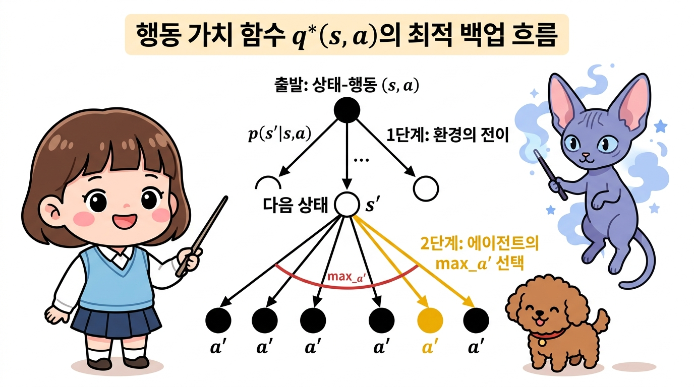
그림 06-16b 행동 가치 함수 q*(s, a)의 최적 백업 다이어그램 흐름: 상태-행동 (s, a) 출발 → 환경의 상태 전이 → 다음 상태 s’에서의 maxa’ 최적 행동 선택
이처럼 두 방정식은 단지 ‘에이전트의 선택(max)’과 ‘환경의 전이(확률 p)’가 일어나는 순서만 뒤바뀌어 있을 뿐, 동일한 최적 원리를 담고 있습니다.
상태 가치 함수 벨만 최적 방정식 백업 다이어그램 상세 분석
벨만 최적 방정식인 [식 06.16]을 수식의 각 항과 매칭하여 구체적인 백업 다이어그램으로 시각화하면 다음과 같습니다.
👧 도로시: “선택된 1등 행동에만 황금빛 불이 켜지고, 떨어진 행동은 회색 점선으로 사라지는 게 정말 직관적이야!”
🐱 지니: “그리고 $\max$ 연산자 때문에 이 방정식은 단순 행렬로 한 번에 풀 수 없는 ‘비선형 연립방정식’이 됩니다. 그래서 다음 장부터 동적 프로그래밍으로 반복 계산해 풀게 되죠.”
🐶 토토: “황금빛 길을 찾아가는 반복 알고리즘, 다음 장도 기대된다, 멍!”
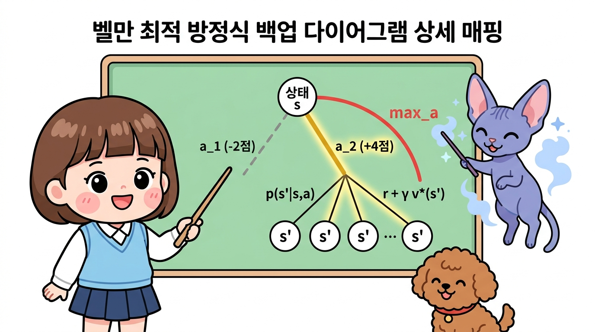
그림 06-17 상태 가치 함수 벨만 최적 방정식의 수식 항과 백업 다이어그램 가지의 1:1 대응 원리를 설명하는 도로시와 지니
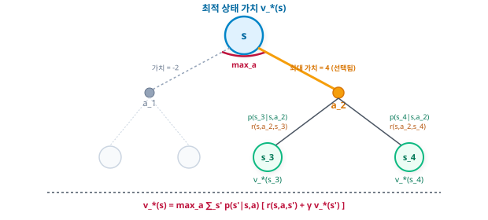
그림 06-18 상태 가치 함수의 벨만 최적 방정식 백업 다이어그램 상세 구조와 수식 각 항의 매핑 관계
위 [그림 06-17]과 [그림 06-18]을 통해 벨만 최적 방정식의 작동 구조를 세 가지 핵심 포인트로 정리해 보겠습니다.
- 수식 항과 다이어그램 가지의 1:1 대응:
- v*(s): 다이어그램 맨 꼭대기의 출발점인 현재 상태 노드(흰색 원)입니다.
- 빨간색 원호(maxa 아크): 에이전트의 여러 행동 갈림길을 가로지르는 빨간 곡선 호입니다. 모든 가능한 행동들의 가치를 확률대로 섞는 가중평균(시그마)을 취하지 않고, 가장 점수가 높은 1등 행동 하나만 단독으로 통과시키는 ‘최댓값 깔때기’ 역할을 합니다.
-
*환경 전이 가지(∑*s’* *p(s’ s, a))**: 선택된 최적 행동 노드(검은색 원) 아래로 환경의 물리 법칙에 따라 다음 상태 s’들로 갈라지는 분기입니다. - 즉시 보상과 미래 가치 (r + γv*(s’)): 환경 전이를 거치며 얻는 즉각적인 보상 r과, 도착한 다음 상태 s’에 누적되어 있는 미래의 최적 가치 합입니다.
- 황금빛 활성화 경로와 탈락한 회색 점선의 대비:
- 후보 행동 a1(-2.0점)과 a2(+4.0점) 중, 더 큰 보상을 안겨주는 행동 a2 가지에만 굵은 황금빛 불이 켜지며 선택됩니다.
- 반면 점수가 낮은 열등한 행동 a1은 확률을 전혀 받지 못해(확률 0%) 회색 점선으로 탈락하며 가치 계산에서 완전히 배제됩니다.
- 벨만 최적 방정식이 ‘비선형(Non-linear)’인 이유:
- 일반 벨만 기대 방정식은 단순 가중합(∑)으로만 이루어져 있어 덧셈과 곱셈만으로 표현되는 선형 연립방정식(Linear Equation)이었습니다. 따라서 행렬의 역행렬을 계산하여 수학적으로 단번에 해를 구할 수 있었습니다.
- 하지만 벨만 최적 방정식은 여러 갈래 중 최고치 하나만을 조건문처럼 골라내는 max 연산자가 포함되어 있기 때문에 비선형 연립방정식(Non-linear Equation)이 됩니다.
- 비선형 방정식은 단순 역행렬 계산으로 한 번에 풀리지 않으며, 바로 다음 장부터 배울 가치 반복(Value Iteration)이나 정책 반복(Policy Iteration) 같은 동적 프로그래밍(Dynamic Programming) 알고리즘을 통해 반복적으로 계산을 갱신하며 최적해를 찾아가게 됩니다.
06.5.4 학습 정리
👧 도로시: “이번 장에서는 최선의 행동에 100% 몰빵하는 결정적 정책과, $\max$ 연산자로 완성되는 벨만 최적 방정식을 완벽히 정복했어!”
🐱 지니: “정말 훌륭해요! $v_$와 $q_$의 최적 수식과 백업 다이어그램 대칭성까지 파악했으니, 이제 어떤 최적 강화학습 알고리즘도 두렵지 않을 거예요.”
🐶 토토: “맥스 마법 깔때기와 벨만 최적 방정식, 완전 마스터 완료! 멍멍!”
그림 06-19 상태 가치 함수(v*)와 행동 가치 함수(q*)의 벨만 최적 방정식 및 max 연산자의 핵심 원리를 완벽하게 정복한 도로시와 지니, 토토
-
최적 정책(π*)과 최적 가치 함수의 정의:
모든 상태에서 상태 가치를 최대로 달성하는 정책을 최적 정책(π*)이라 합니다. 최적 정책을 따랐을 때 얻게 되는 최고의 기대 수익을 각각 최적 상태 가치 함수(v*(s) = maxπ vπ(s))와 최적 행동 가치 함수(q*(s, a) = maxπ qπ(s, a))라고 부릅니다. -
벨만 방정식의 보편성과 결정적 최적 정책(Deterministic Policy):
벨만 방정식은 초보/무작위 정책부터 최적 정책까지 세상의 모든 정책에 대해 예외 없이 100% 성립합니다. 최적 에이전트는 기대 점수를 최대화하기 위해 여러 행동 중 가장 높은 기대 수익을 주는 최선의 행동 하나에만 확률 100%를 전부 집중(몰빵)하므로, 확률적 정책은 자연스럽게 단 하나의 행동만을 선택하는 결정적 정책(μ*(s))으로 귀결됩니다. -
상태 가치 함수의 벨만 최적 방정식 [식 06.16]:
최적 정책 하에서는 행동들을 확률대로 섞는 가중평균(∑a π*)을 구할 필요 없이, 가능한 행동 후보들 중 기대 가치가 가장 큰 것 하나만 최댓값 연산자(maxa)로 쏙 골라냅니다. 이로 인해 수식에서 정책 기호(π)가 완전히 사라지고 환경의 규칙(p, r)과 미래의 최적 가치(v*)만으로 현재 상태의 최적 가치가 결정됩니다. \(v_*(s) = \max_a \sum_{s'} p(s' \mid s, a) \left\{ r(s, a, s') + \gamma v_*(s') \right\}\) -
행동 가치 함수의 벨만 최적 방정식 [식 06.18]:
Q 함수는 상태 s에서 이미 행동 a를 취한 상태에서 출발하므로 시작 시점에는 max가 붙지 않으며, 환경 전이를 거쳐 다음 상태 s’에 도착한 후 그다음 행동 a’를 선택할 때 *max*a’가 적용됩니다. 이 식은 현대 강화학습의 최고 핵심 알고리즘인 Q-러닝(Q-Learning)과 DQN(Deep Q-Network)의 탄탄한 수학적 모태가 됩니다. \(q_*(s, a) = \sum_{s'} p(s' \mid s, a) \left\{ r(s, a, s') + \gamma \max_{a'} q_*(s', a') \right\}\) -
백업 다이어그램의 거울 대칭성과 비선형 연립방정식:
- v*는
상태 s 출발 → 에이전트의 max_a 선택 → 환경의 상태 전이 p순서로 흐르고, q*는상태-행동 (s, a) 출발 → 환경의 상태 전이 p → 에이전트의 max_{a'} 선택순서로 흘러 완벽한 거울 대칭을 이룹니다. - 또한 벨만 최적 방정식은 최고치 하나만을 골라내는 max 연산자로 인해 비선형 연립방정식(Non-linear Equation)이 되므로, 단순 행렬 연산 대신 다음 장부터 배울 동적 프로그래밍(가치 반복/정책 반복)과 같은 반복적 최적화 기법을 통해 해를 구하게 됩니다.
- v*는